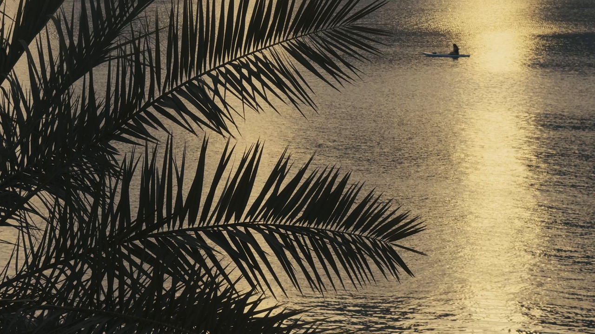
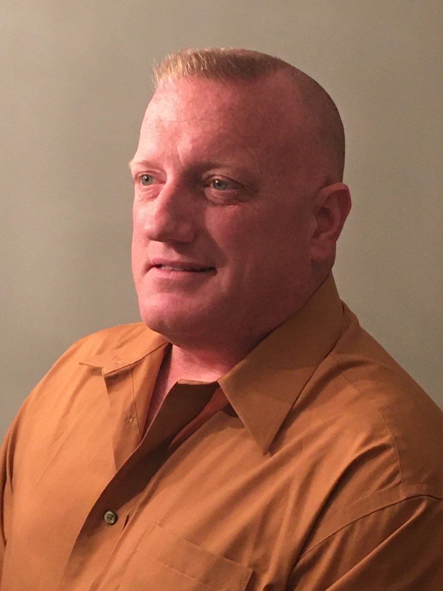
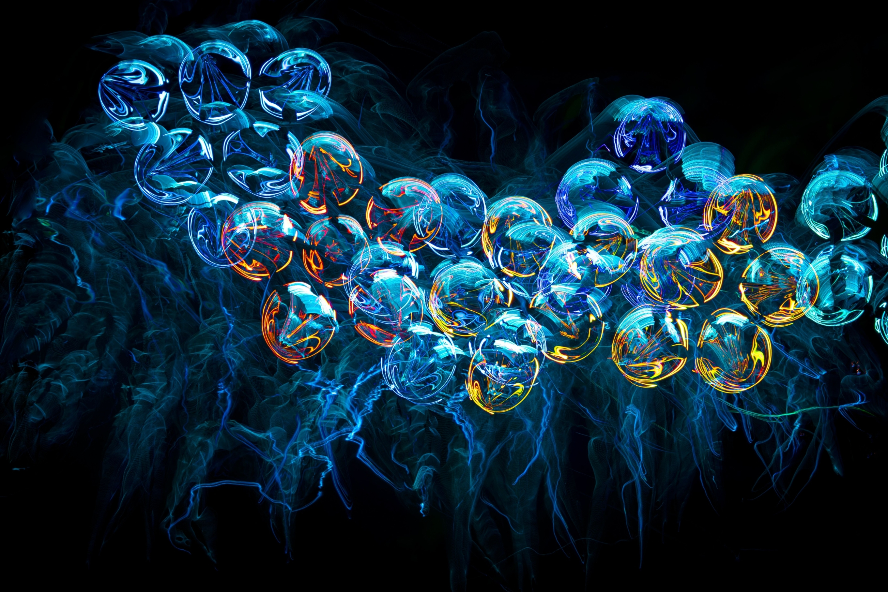

≈
Water Science
Water quality, purification, resource management and resilient water systems.

A research and development foundation focused on scientific inquiry, environmental stewardship, education, innovation and sustainable development through responsible collaboration.
The Foundation's public presentation includes its founder as part of the institution's history and leadership record. Formal biographical and governance details should be published only as verified by the Foundation.

This portrait is presented as the Foundation's founder image. The website deliberately avoids adding an unverified biography, title, credentials or personal history until the corresponding official information is confirmed.
The Foundation's public research framework centers on multidisciplinary areas with potential applications to communities, institutions and sustainable development.
Water quality, purification, resource management and resilient water systems.
Biodiversity, conservation, climate resilience and ecosystem restoration.
Research into clean-energy technologies and sustainable energy systems.
Responsible use of data and artificial intelligence in research and environmental monitoring.

SovereignAqua is building a framework for research, education, knowledge exchange and responsible innovation.
Programme pages distinguish current institutional information from future, proposed or developing work so visitors can understand what is established and what remains in development.

Research directions addressing conservation, resilience and sustainable resource use.

Educational resources, scientific training and knowledge-transfer initiatives.

Opportunities for institutions, researchers and organizations to explore responsible collaboration.
Public impact figures are not presented as established facts without supporting records. Verified programme results, publications, partnerships and geographic reach can be added as documentation is finalized.